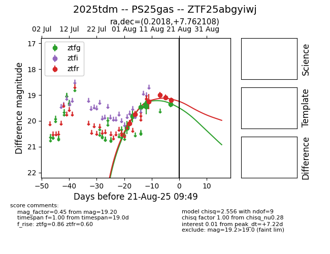

Target 2025tdm at 2025-08-28 08:32, see:
FINK: fink-portal.org/ZTF25abgyiwj
Lasair: lasair-ztf.lsst.ac.uk/objects/ZTF25abgyiwj
ALeRCE: alerce.online/object/ZTF25abgyiwj
TNS: wis-tns.org/object/2025tdm
YSE: ziggy.ucolick.org/yse/transient_detail/2025tdm
alt names
ZTF25abgyiwj (ztf,fink)
2025tdm (tns,yse)
PS25gas (panstarrs)
coordinates:
equatorial (ra, dec) = (0.2017,+7.76211)
galactic (l, b) = (101.7754,-53.01723)
photometry
last atlaso=19.46, ztfg=19.63, ztfr=19.60
2 atlaso, 4 ztfg, 8 ztfr detections
